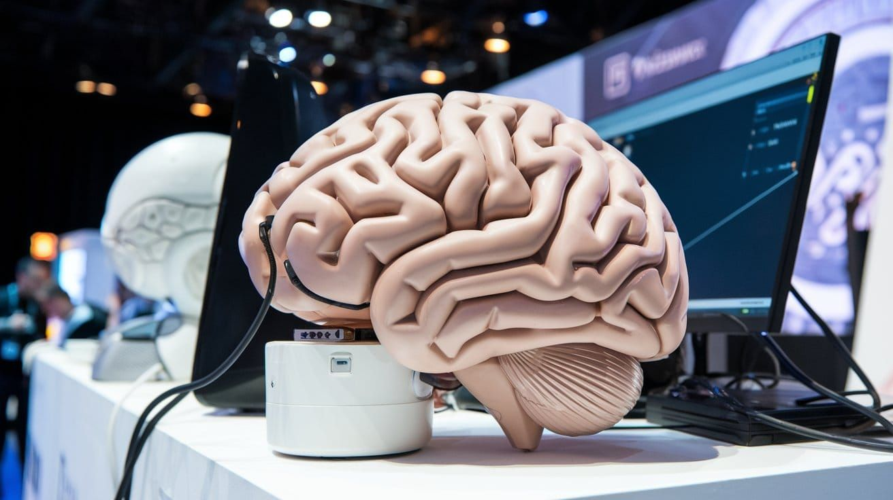

"תגיד את האמת - אתה באמת מבין אותי? או שאתה רק עושה את עצמך?"
פורסם במקור ב LinkedIn
"תגיד את האמת - אתה באמת מבין אותי? או שאתה רק עושה את עצמך?"
השבוע הציגו בתערוכת הטכנולוגיה העולמית CES 2025 משהו שלא נראה עדיין - היא לא דיברה רק על טכנולוגיה, אלא על אנשים. במקום עוד מכונה שמגיבה לפקודות, דיברו על AI שמרגיש – כלומר מכונות שמתחילות להבין אותנו מבפנים. זה כבר לא רק דרך נתונים יבשים אלא דרך הרגשות שלנו, וזו חתיכת בשורה מטלטלת.
אז מה היה שם?
1️⃣ בינה מלאכותית רגישה ואמפתית – לא עוד בינה שמבינה רק פקודות, אלא כזו שקולטת את הטון שלנו, את ההבעות שלנו, את מה שאנחנו לא אומרים. דמיינו שאתם מתייעצים עם שירות לקוחות, ובמקום רובוט קר, הוא מגיב בנימה רכה, מבינה.
2️⃣ מכונות במגע אנושי – רובוטים שיודעים לגעת (כן, לגעת!) עם רגש. מערכת אחת שהוצגה נועדה לספק תמיכה פסיכולוגית – לא רק בעזרת מילים אלא גם דרך מחוות גוף.
3️⃣ יישומים שמשנים חיים – אחד המוצרים המעניינים שהוצגו היא מערכת רפואית שמזהה מתוך הקול שלכם אם אתם סובלים ממתח, חרדה או אפילו דיכאון, ומציעה תמיכה מיידית. דמיינו כמה חיים אפשר לשנות, אולי אפילו להציל, עם טכנולוגיה כזו.
מה זה אומר עלינו?
אנחנו כל כך רגילים לחשוב על מכונות כקרות ומנוכרות, שהרעיון של מכונה שמבינה אותנו אולי יותר ממה שאנחנו מבינים את עצמנו, מעורר הרבה שאלות.
מה יקרה כשנכניס מכונות כאלו לבית? לעבודה? לחיים?
האם הן יעזרו לנו להיות יותר אנושיים, או דווקא להפך - יגרמו לנו להתרחק עוד יותר זה מזה?
מעניין לחשוב על הילדים שלנו. הם יגדלו בעולם שבו רובוטים יכולים להיות החברים הכי טובים שלהם, המורים שלהם, אולי אפילו הפסיכולוגים שלהם. האם זה יגרום להם להרגיש פחות לבד – או אולי להפך?
